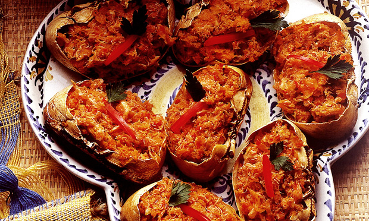

Casquinha de cranguejo

IGREDIENTES
- ½ kg de carne de caranguejo
- 20 casquinhas de caranguejo
- 2 cebolas
- 2 tomates
- 3 dentes de alho
- 1 pimentão
- ½ copo de vinagre branco
- 1 ruma de pimenta-do-reino
- 1 ruma de cominho
- 1 ruminha de sal
- Azeite de oliva a gosto
MODO DE PREPARO
- Colocar a cebola picada para dourar, depois acrescenta os demais temperos, (pimenta, cominho, alho picado) com ½ copo de vinagre.
- Colocar o cheiro verde, os tomates esmagados, o pimentão cortado em pedacinhos.
- Quando o tempero estiver bem cozido, acrescente o azeite de oliva a gosto (pelo menos 3 colheres).
- Depois acrescenta-se a carne de caranguejo e ferva por 5 minutos.
- Encha as casquinhas de caranguejo e enfeite-as com folhas de salsa.